第15回 実ロボットの運動生成
WBA若手の会第15回勉強会を開催致しました。
今回は、「運動生成」を出発点として、ロボティクスとAGIとの関係を取り扱い、ニコニコ生放送にて配信されました。
アーカイブ動画
発表資料
「実ロボットの運動生成」 from Yurika Doi
日時： 6月16日（木） 19:30～21:30 (開場 19:00)
場所：株式会社ドワンゴ 銀座松竹スクエア 13階 セミナールーム
ハッシュタグ：#wbawakate
http://wbawakate.connpass.com/event/32355/
※受付等はありません。参加登録の上、直接セミナールームにお越しください。ただし、スタッフが参加登録の確認をさせていただく場合がございます。
定員：90名
講演者：土井ゆりか(東京大学 4年)
テーマ：実ロボットの運動生成
講演内容(予定)：
- ロボティクスの現状
- 最先端の汎用ロボット研究の紹介
- 運動学・動力学を用いた運動生成
- 強化学習による運動生成
- 形態・物性を活かした運動生成
- CPGによる運動生成
- まとめ
- 議論 / 質疑応答
講演者コメント：
今回はロボットの運動生成を取り扱います。
汎用人工知能実現を実現するにあたっては、状況に応じて多様な行動を行える必要がありますが、リアルタイム性、ロバスト性、新しい状況への適応力といった乗り越えるべき課題があります。
本勉強会では運動学・動力学にもとづく運動生成の基礎を押さえつつ、これらの課題を克服する一歩として,環境とロボットの身体の関係を考慮した運動生成の枠組みを紹介します。具体的には、Deep Learningと強化学習を組み合わせた運動生成や、形態・物性を活かした運動生成、生体の神経回路からヒントを得たCPGによる運動生成について説明し、汎用ロボットの実現可能性を考えていきたいと思います。
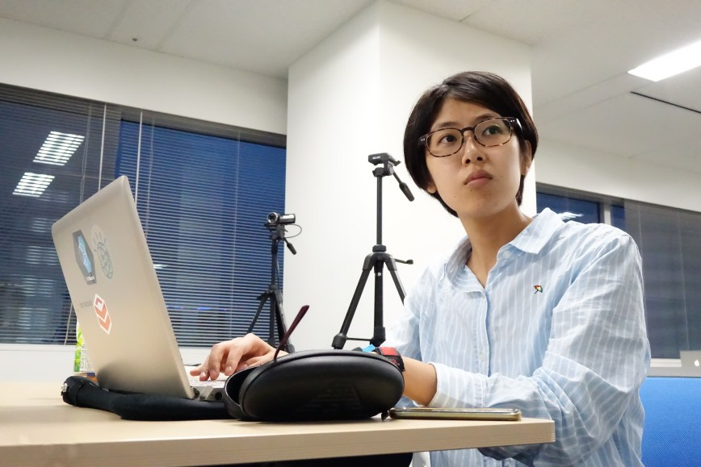
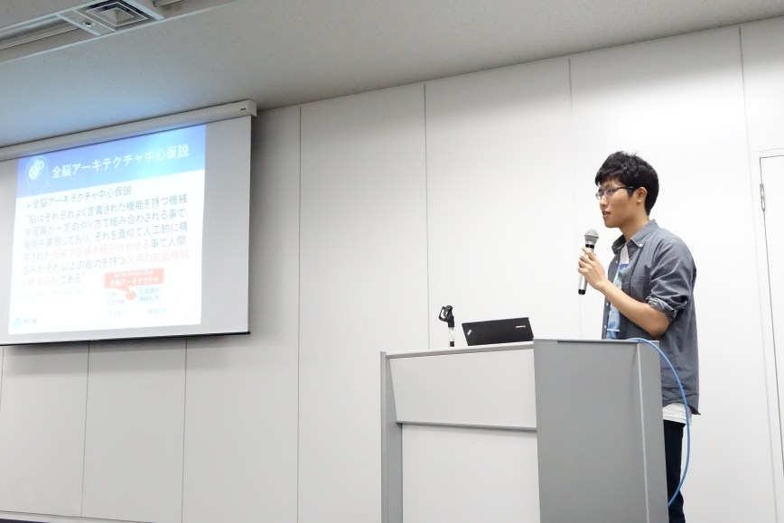
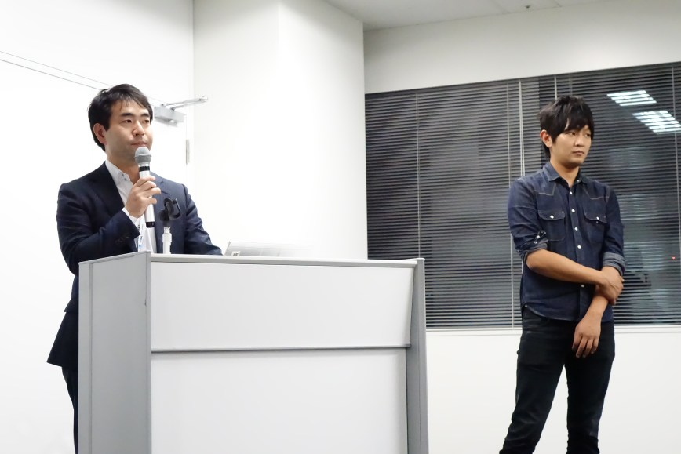
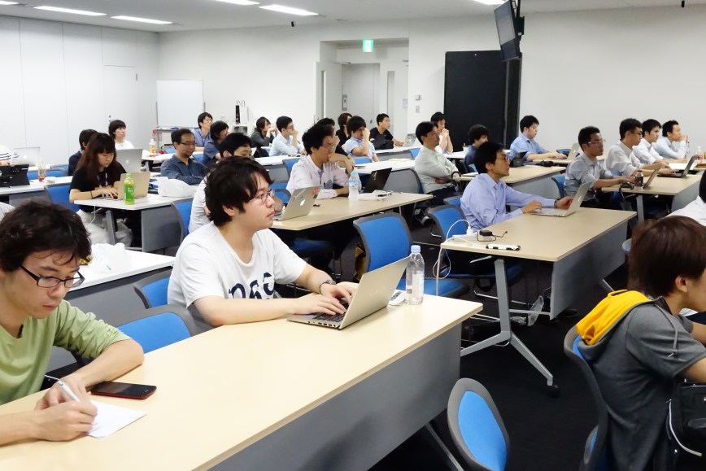
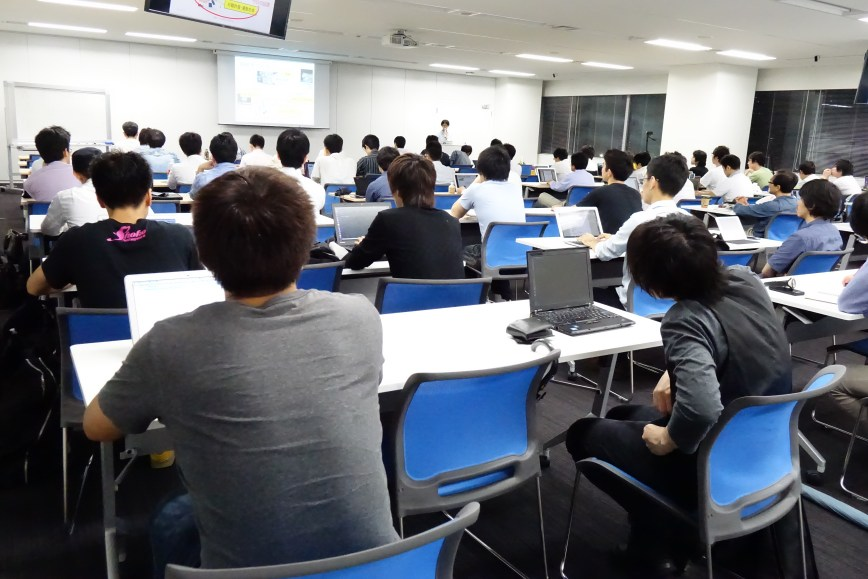
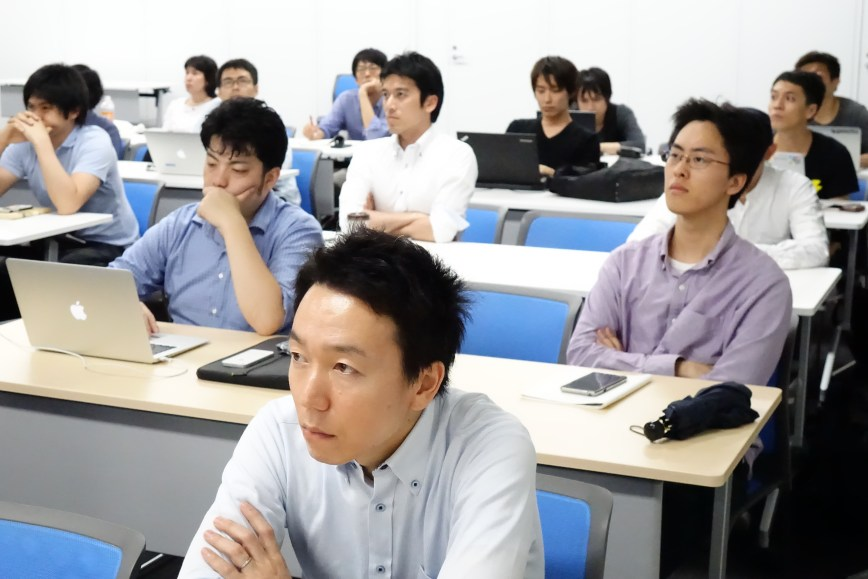
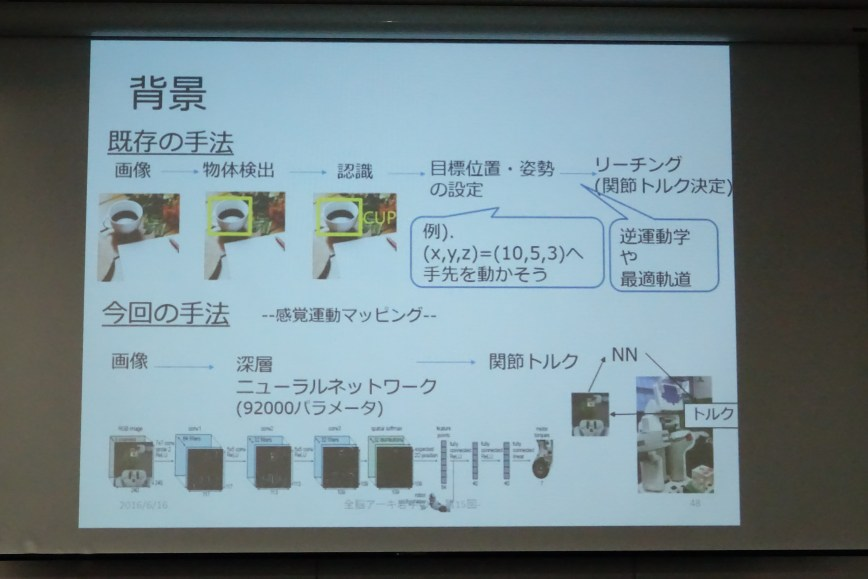
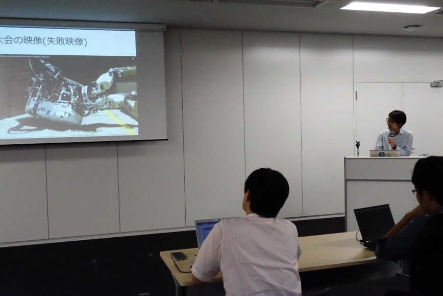
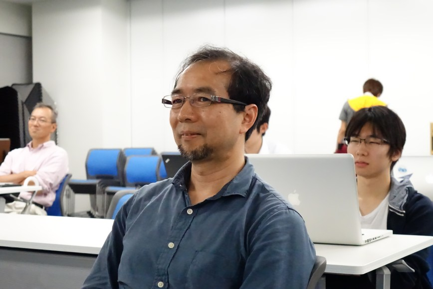
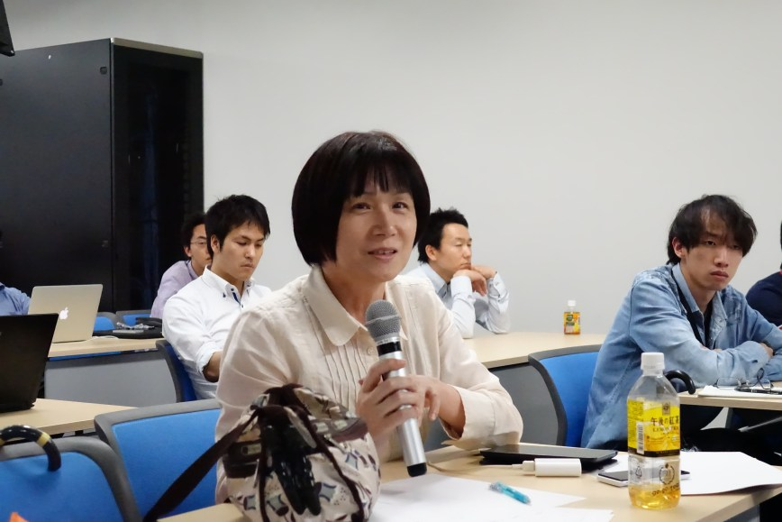
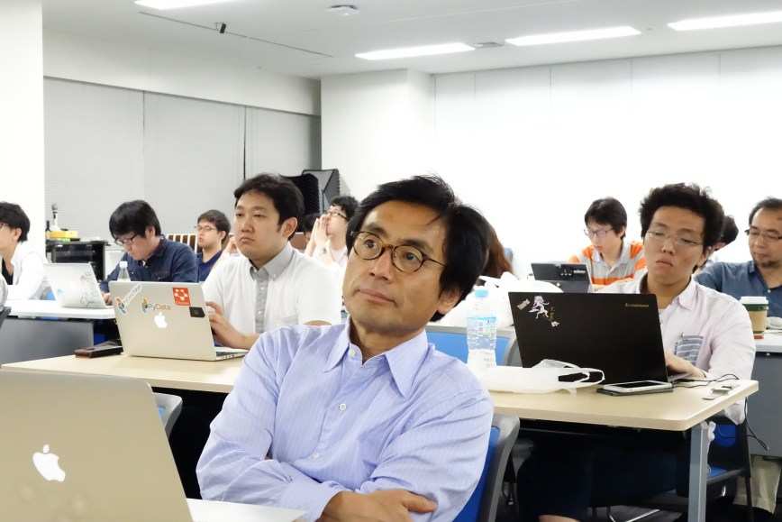
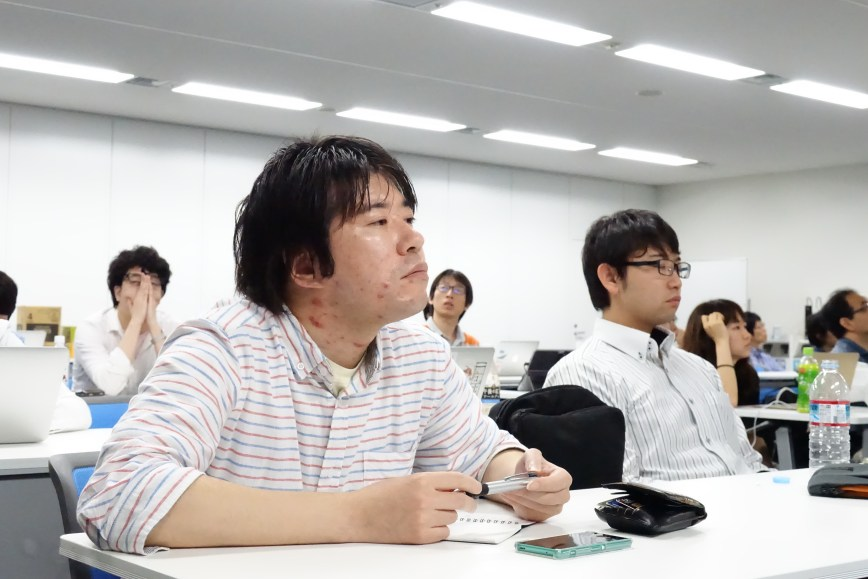
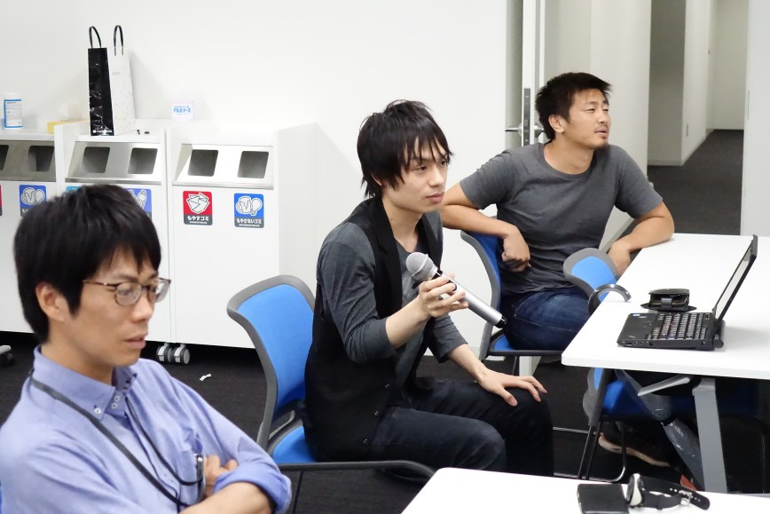
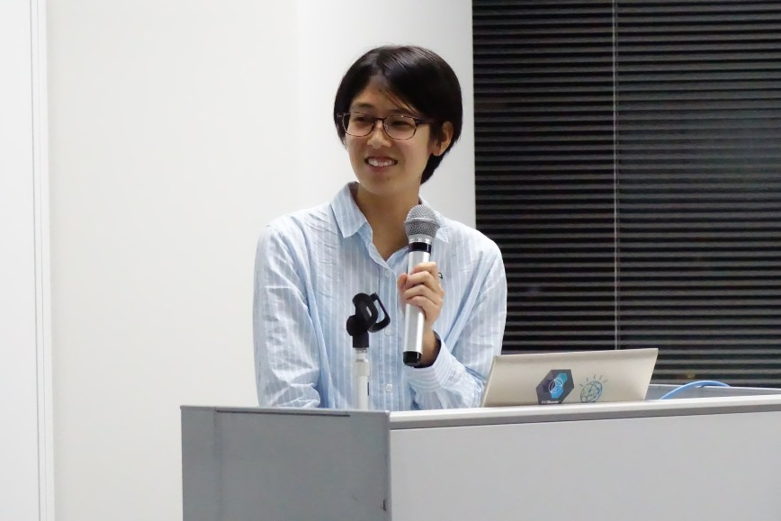